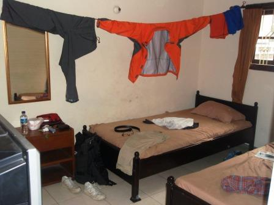
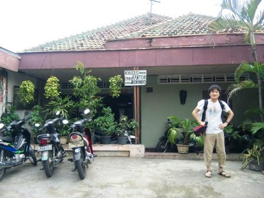
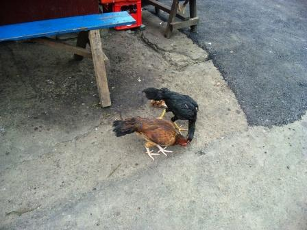
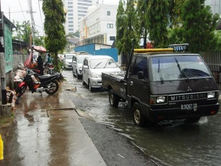
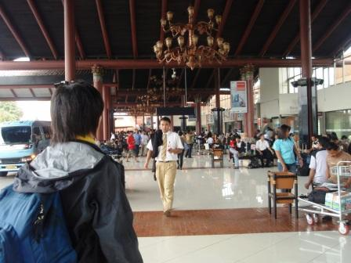
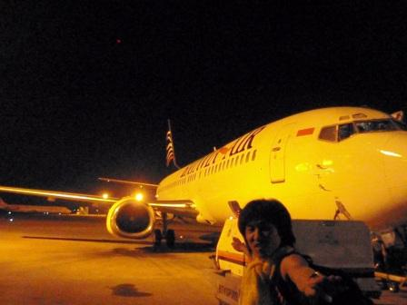

2日目～バタビア航空でロンボク島へ～


ジャカルタは熱帯に属するため、一年を通して気温はあまり変わらず、だいたい平均気温は30℃である。一年は乾季と雨季とに分かれており、3月は一応雨季の終わりごろということになっている。そのせいか、蒸し暑すぎてよく眠れなかった。おまけにクーラーの効きも悪い。リモコンには18℃に設定されているという表示があるのにもかかわらず。


あまり眠れなかったが、朝起きて水浴び(マンディ)をすると気分は爽快だ。インドネシアの安宿では、たいてい浴槽はない。シャワーすらないところもあるらしいが、昨晩の宿は、水シャワーはすえつけられていた。シャワーがない場合は、トイレの横にある水槽からおけで水をすくって浴びる。シャワーの場合も水槽の場合も、どちらも水を浴びることをマンディというのだが、インドネシア人は一日に何回もマンディをするらしい。実際にしてみてなるほどと思ったが、マンディはとても気持ちがいい。暑いとどうしても体がベタついてくるが、マンディをすればしばらくはサラサラ♪宿を出て両替所と、レンタカーを貸してくれるところを探しに出かけた。やはりタクシーや、バジャイ(3輪自動車)のうんちゃんがしきりに声をかけてくる。町には、ノラ猫やノラ鶏がたくさんいた。

ジャランジャクサ周辺をぶらぶら。道路はバイクであふれかえっている。写真中央の赤い乗り物がバジャイである。今回の旅では一度も利用しなかったが、準タクシー的な存在で値段もタクシーより少し安いらしい。

途中肝串が10円くらいで売っていたので買ってみたが、あまり口にあわず。小奇麗な食堂があったので入って、ミーアヤンセットを注文。145円でスープとドリンクがつくのだから安い。ミーアヤンは、見た目はスープのないラーメンという感じ。口に入れてみると、チキンの風味がうまい具合に聞いていてとても美味。値段も手ごろなので言うことなしだ。レンタカー会社いくつかあたってみたが、貸してもらえないということだった。やはり空港で借りるしかないと思い、今度は両替所を探すことにした。空港では2千円程度しか替えておらず、少しでもレートがよければいいのだが。


歩いていると、突然スコールが！とりあえず近くの衣類ショップに逃げ込む。靴のコーナーでは、なぜかマネキンの下半身のみを逆さにして展示するという不思議な光景に出くわした。雨は降りやまない。近くで傘を持って道行く人に声をかけている男の子を見つけ、傘を売っているのだと思い、声をかけてお金を渡し、傘を受け取って二人で歩き出す。すると、男の子が雨に打たれながらあとをついてくる。どうも、売ったのではなく、貸し与えているだけのようだ。びしょ濡れになりながらついているので、かなり罪悪感を感じた。とりあえず銀行で傘を返してさよなら。銀行よりも空港のほうがレートは少し良かったので、もう中心部に用はない。雨の中、カッパを来てバスターミナルまで戻る。気付いたのが、傘よりも濡れないじゃん、ということ。

レートは空港のほうがいいことが分かったのでまず国際線の到着ロビーで両替を済ませ、レンタカーの手配をすることにした。交渉は困難を極めた。まず、レンタルの期間が約2週間と長期間であるし、運転地域はジャカルタのあるジャワ島だけではない。スマトラ島までフェリーで行くと言ったら、とんでもないとレンタカー会社の人は騒ぎ始めた。しかも、一日6千円程度を提示してきた。運転地域の詳細を伝え、長いことを交渉を続けると、向こうが折れてくれる形で話はまとまった。ロンボクから再びジャカルタへ戻ってきたときにケータイに連絡することを約束し、僕たちと車での、大冒険を期待しながら彼らと別れた。このときは、このレンタカーをきっかけとして起こる様々なトラブルを知る由もなかった。シャトルバスで国内線ターミナルへと移動。雰囲気は国際線を少し簡素にしたという感じで、当然だが地元の人がわんさか。

昼飯を食おうとA＆Wへ。空港にはマックは一つもなく、このA＆Wがあちこちにあった。以前カナダで食べたのが懐かしい。セットメニューにご飯があるのが驚きだった。日本のマックにご飯メニューなどないのに。よほどご飯好きな国民なのだろう。

国内線の出発ロビーは雰囲気のあるつくりで、しかも通路に屋根があるだけというなんともオープンな感じ。中庭もあり、大勢の人が地べたに腰を降ろしているあたり、とてもインドネシアっぽい。この後、搭乗予定のバタビア航空の便のアナウンスがなかなか入らない。結局、30分延長、さらに30分延長、再び1時間延長…。結局、2時間も延びてしまった。待っているときにご機嫌取りのようにパンが配布された。お弁当も配られていたが、他の便の客用らしい。どれだけ待たされているのだろう。待合室の人たちは不思議とみんなイライラすることもなく、いつものことさといった感じだった。

待合室からはバスで飛行機へ移動。このバスだが、昔は日本で活躍していたようだ。

いざ、バタビア航空の機内へ！が、めちゃ蒸し暑い！空調がイカれているのか。飛び立つと多少は涼しくなったが、遅刻に空調不調、これがバタビアクオリティなのか。スラバヤを経由し、ロンボク島、マタラムの空港へ降り立つ。暗いのでよくわからなかったが、かなり簡素な造りの飛行場で、飛行機を降りると乗客はそのままある方向へスタスタと歩いていく。マタラムからタクシーであらかじめ予約してあったスンギギにある宿、ラジャズ・バンガローへ。この日も移動ばかりで疲れた。
翌日へ